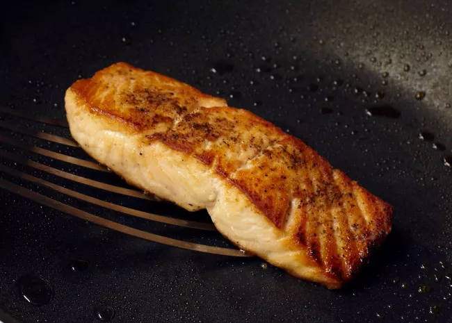

Salmon

Steps
- Season the salmon fillets with salt and pepper. In a large skillet, add butter or oil and the salmon fillets skin-side down. Heat to medium-high and cook for about 5 or 6 minutes.
- Gently use a wide spatula to flip the fish and cook skin-side up for 3 to 5 minutes or until done. Finish with a little squeeze of lemon.
BACK TO HOME PAGE